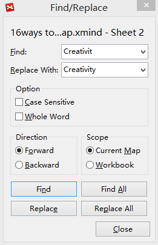

XMind
Collaborative Minds
検索と置換
XMind で検索と置換機能を使用し、繰り返し情報をすばやく更新することができます。
マップを開きます。
これらいずれかの方法でダイアログ ボックスを開きます。
メニューから「編集 → 検索/置換」を選択します。
ショートカットキーの ' Ctrl + F' (Max は Command + F)を使用します。
トピック、関連、囲み、要約、注のテキストを検索と置換することができます。
検索/置換ダイアログ

こちらもご覧ください...
トピック
オンライン検索
ヘルプ センター